Рим. День восьмой.
23.06.2014
- Поездом в Рим.
- Кализей или Колизей или Калезей, вообщем завтра узнаем
- Позднее возвращение
23.06.2014
Решили ехать в Рим поездом. Цена на билет из Флоренциии до 8 утра - 20 евро, после 45-60 евро. Если бы я ехал в Рим с бабушкой, то мы наверняка бы поехали на 6 утра, но мы поехали в 12.
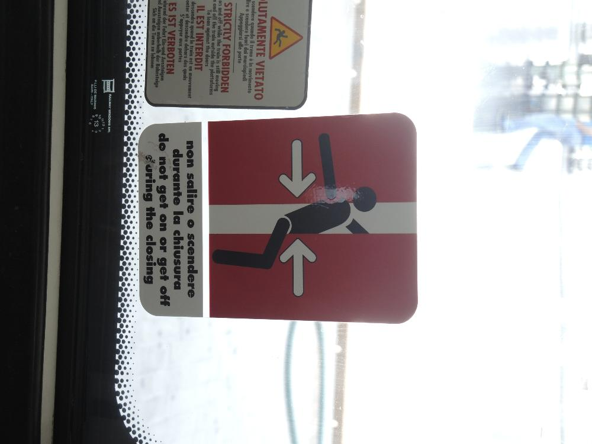
"Будешь плохо себя вести - проводник прищемит тебе самое дорогое"
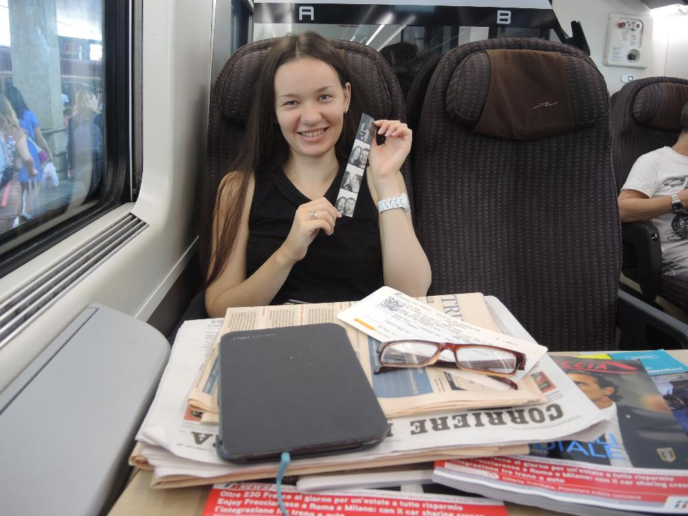
Навалили значит нам на стол кучу итальянских газет - типо развлекайетсь господа все полтора часа. Кстати, поезд ехал со скоростью 250 км/ч, и поэтому все время закладывало уши и болела голова. Такое ощущение, что мы как будто все полтора часа были в самолете, который пытался взлететь.
Еще сфоткались в настоящей ретро-фотобудке, после того как вылезла фотка, ей даже пришлось некоторое время махать - сушить потекшие чернила.
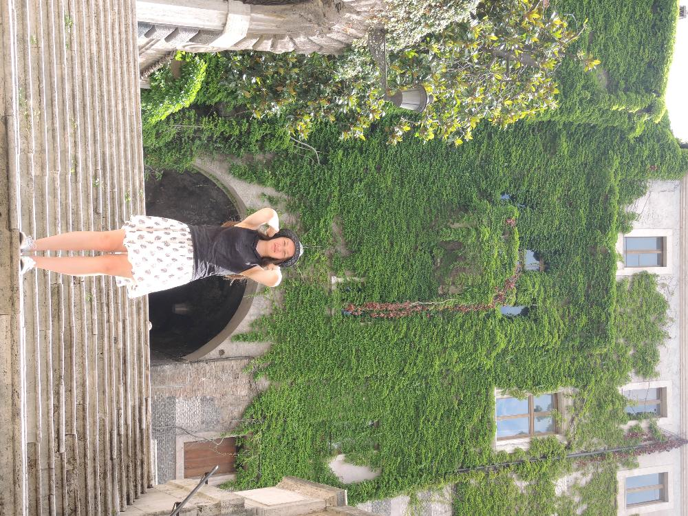
Римские окна сильно заросли, по ним бы пройтись жилетом...
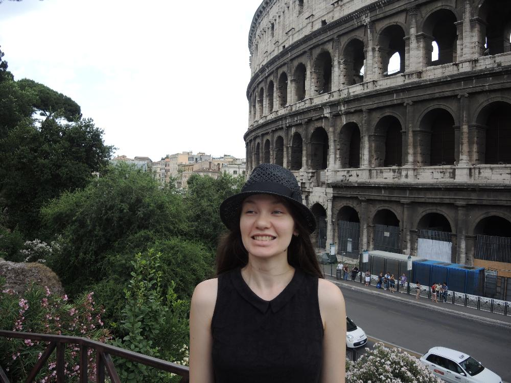 Наташ, представь что сзади тебя колизей.
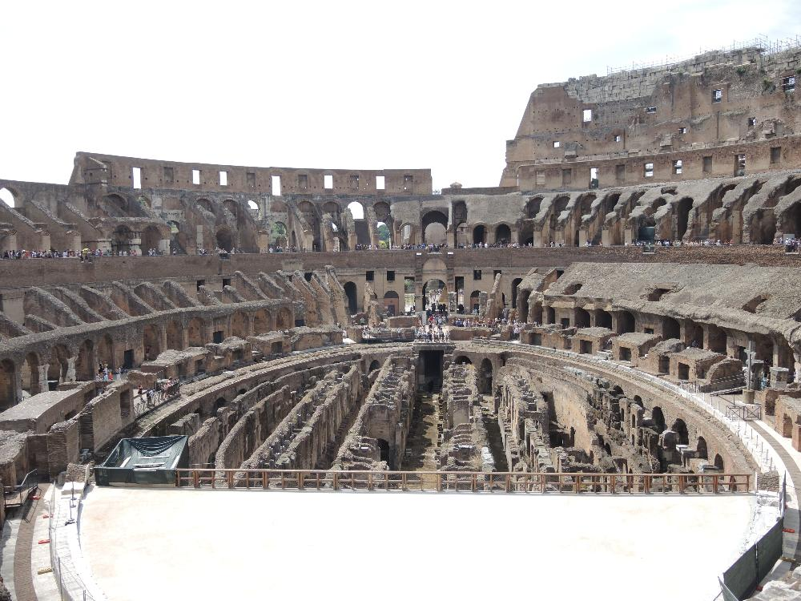 Оказывается, под самим "танцполом" колизея были какие-то ходы - то ли это предыдущие застройки, то ли ходы чтобы выпускать львов, как в фильме "Гладиатор".
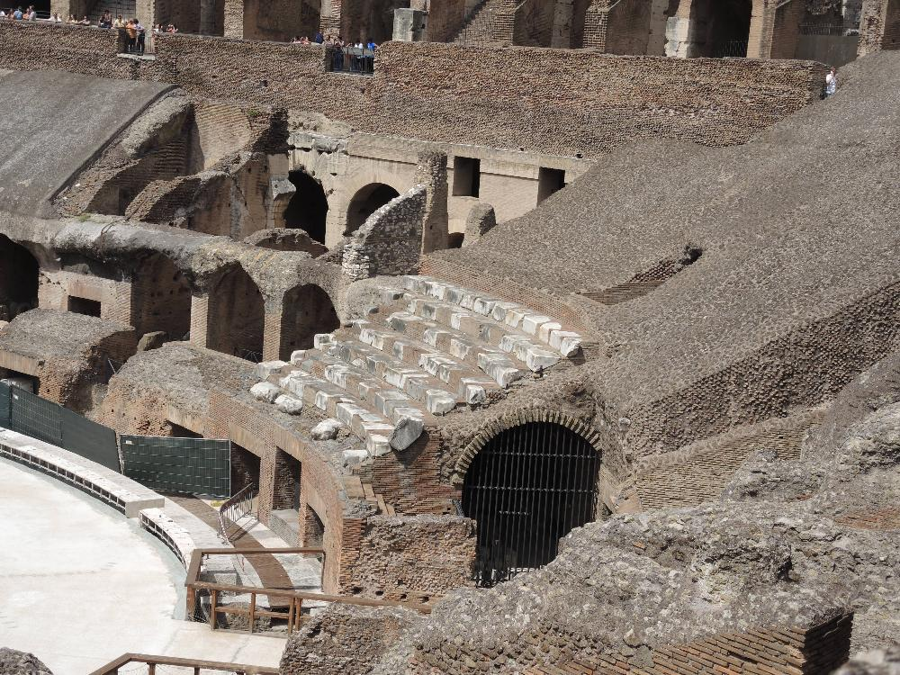 Кое-где сохраниился первоначальный вид ступенек, на которых сидел римский народ и ел римский попкорн.
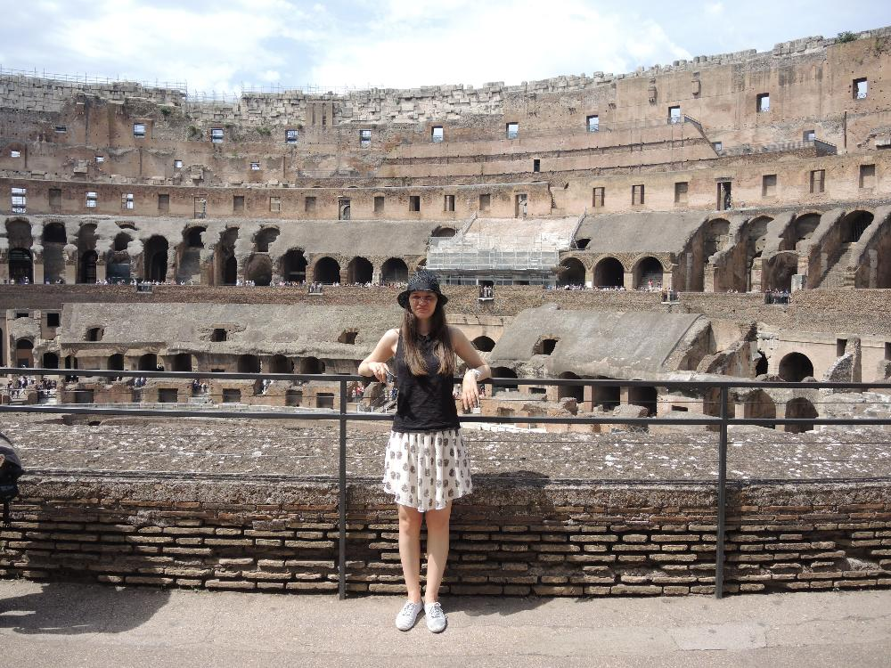 Похоже сейчас идет реставрация верхних уровней колизея- тех самых, которые предназначались для женщин и рабов.
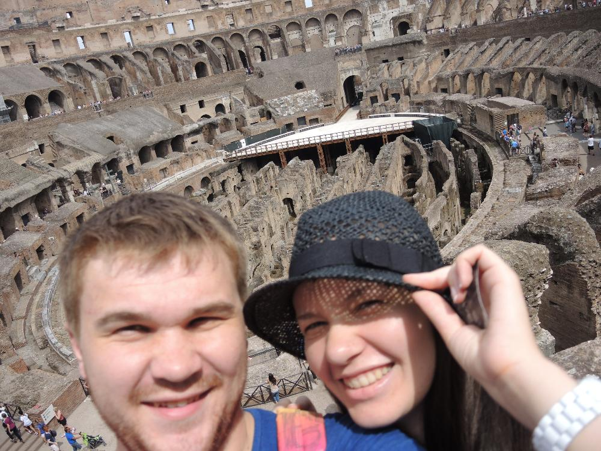 колизелфи
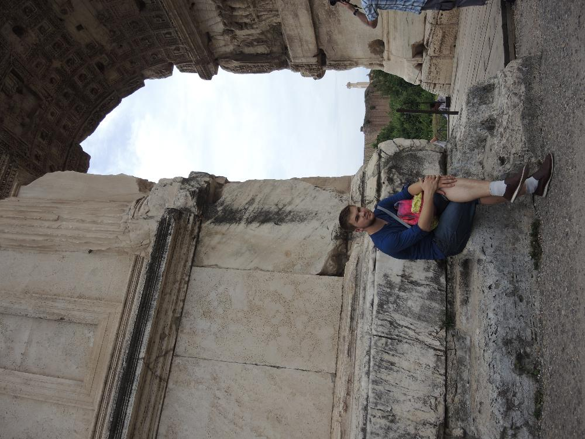
Прислонился 23-летним задом к 2000+летней арке
Наташа считает, что статуя на этом месте стояла именно так.
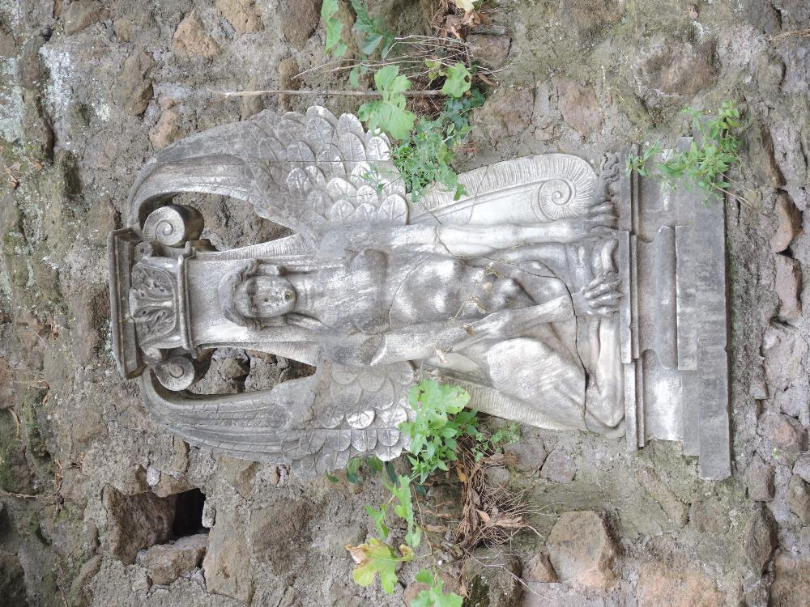
Десяточка, это я просто количество.
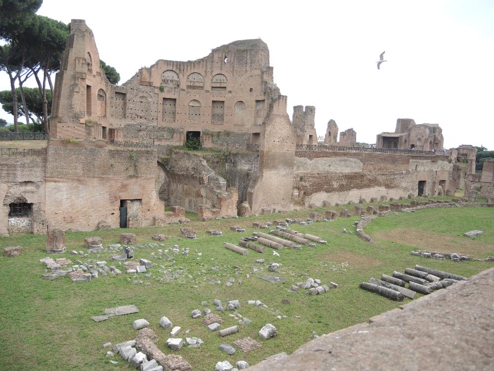 Любая великая империя рано или поздно уходит в прошлое...
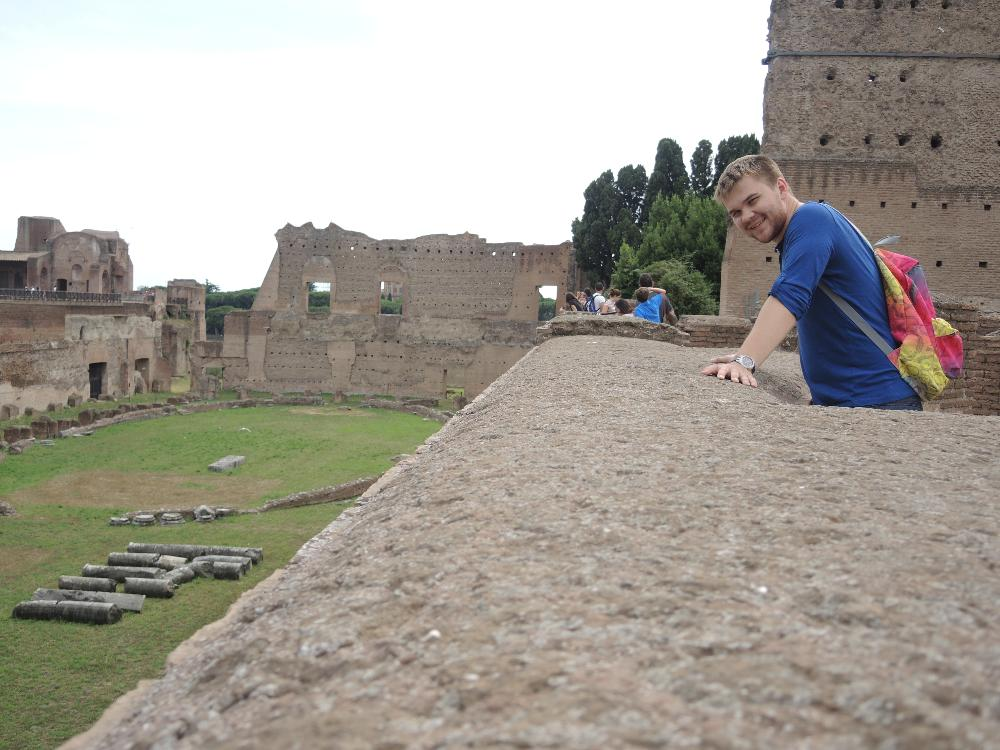 Ох, как колонки в ряд упали
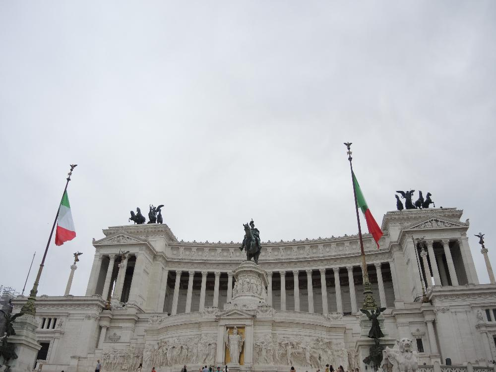 Здоровенный, здоровенный дворец! Венецианский. Привет уже немного подзабывшейся Венеции.